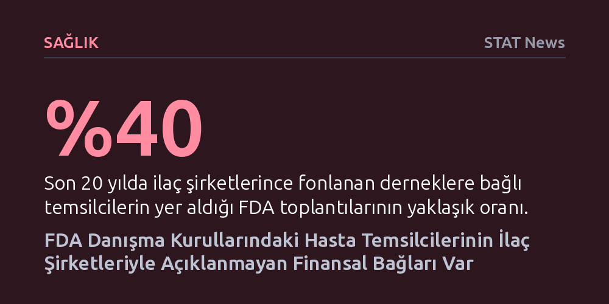

SAGLIK · STAT News · 2026-10-14
Son 20 yıldaki FDA danışma kurulu toplantılarının yaklaşık yüzde 40'ında, ilaç şirketlerince fonlanan derneklere bağlı hasta veya tüketici temsilcileri yer aldı. Temsilcilerin onda birinden fazlası doğrudan incelenen ilacın üreticisinden fon alan örgütlerle ilişkiliyken, bu çıkar çatışmaları toplantılarda kamuoyuna açıklanmadı.
İlaç onaylarında bağımsız hasta sesi sanılan temsilcilerin ilaç endüstrisiyle denetimsiz mali bağları olduğunu ve kurul kararlarının örtük çıkar çatışmaları altında alındığını gösteriyor.

Amerikan Gıda ve İlaç Dairesi (FDA), yeni ilaçların onay süreçlerinde ve kritik sağlık politikalarında bilimsel danışma komitelerinin tavsiyelerine büyük ağırlık veriyor. Bu komitelerde sadece tıp ve istatistik uzmanları değil, doğrudan tedaviden etkilenecek hastaların ve tüketici haklarının bakış açısını yansıtmak üzere özel temsilciler de görevlendiriliyor. Kamuoyunun beklentisi, bu sivil üyelerin yalnızca hastaların menfaatini gözeterek tamamen tarafsız bir değerlendirme yapması yönünde.
Ancak Health Affairs Scholar dergisinde yayımlanan yeni bir araştırma, bu tablonun göründüğü kadar masum olmadığını ortaya koyuyor. Son yirmi yıllık döneme yayılan FDA danışma kurulu toplantıları incelendiğinde, oturumların yaklaşık yüzde 40'ında ilaç şirketlerinden maddi destek alan hasta veya tüketici savunuculuk gruplarıyla aktif bağı bulunan temsilcilerin yer aldığı saptandı. Bazı spesifik kurullarda ise bu tür temsilcilerin oranı yüzde 50 sınırını dahi aşıyor.
Araştırmanın ortaya koyduğu en kritik ayrıntı, çıkar çatışmasının genel bir sektör yakınlığından ibaret kalmayıp doğrudan inceleme konusu olan ilaca kadar uzanması. İncelenen her on danışma kurulu toplantısından birinden fazlasında, masadaki ilacın ruhsat sahibi olan ilaç üreticisinden fon sağlayan bir kuruluşa mensup temsilciler görev yaptı.
Buna karşın, söz konusu kurumsal ve mali bağların büyük çoğunluğu toplantılar sırasında heyete veya kamuoyuna açıklanmadı. Kurul üyelerinin oylama davranışlarını doğrudan etkileyebilecek bu gizli ilişkilerin beyan edilmemesi, onay tavsiyelerinin bilimsel tarafsızlığına ve şeffaflığına gölge düşürüyor.
FDA'nın bilim insanları ve tıp uzmanları için uyguladığı çıkar çatışması kuralları son derece sıkı ve köklü kurallara dayanıyor; bilimsel panel üyelerinin kişisel yatırımları ve danışmanlık gelirleri titizlikle denetleniyor. Buna karşılık, hasta ve tüketici temsilcileri için geçerli olan etik düzenlemeler aynı olgunlukta değil. Özellikle temsilcilerin üyesi olduğu derneklerin ilaç sektöründen aldığı kurumsal bağışlar, mevcut denetim mekanizmalarının radarına neredeyse hiç takılmıyor.
Hasta temsilcileri, yeni tedavilere duyulan acil ihtiyacı dile getirerek komitelerin vicdani ve nihai kararlarında kritik bir rol oynuyor. İlaç endüstrisinin hasta derneklerini fonlayarak bu kurullara dolaylı nüfuz sağlamasına imkân tanıyan politika boşluğu giderilmediği sürece, halk sağlığını doğrudan ilgilendiren ilaç onay süreçlerinin bağımsızlığı tartışma konusu olmaya devam edecek.